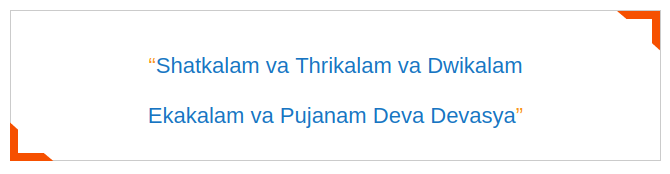

Arjitham means Darshan or Seva to the Lord on payment of a fee as fixed by the Temple Management. Admission to any particular seva on payment of a fee is known as “Amantranotsavam”.
The Agamas in general are revered along with the Vedas as primary Hindu scriptures. All of the Agamas elucidate the science of ritual, but the uniqueness of "Vaikhanasa Agama" is that it gives more detail on the performance of ritual, both in the temple and in the home. The "Vaikhanasa Agama" exists in two parts. The first part deals with rituals that are performed in the temple and to the presiding deity. The second part deals with purification ceremonies that a priest must undergo in order to qualify to serve in the temple. "Vaikhanasa Agama" was written by Sage Vikhanasa, is considered as one among four main "Vaishnava agamas". Mareechi, Bhrigu, Kashyapa and Atri, the four disciples of Sage Vikhanasa spread the essence of Vaikhanasa Agama across the world. The daily, weekly, monthly and annual arjitha sevas or festivals that are performed in the famous hill shrine of Lord Venkateswara at Tirumala are as per the recommendations of Vaikhanasa Agama since several centuries. The Vaikhanasa Agama recommends six times puja a day viz. Prathyusham which promotes the development of healthy population, Pratahkala that promotes Japa and Homa, Madhyahna in the promotion of the kingdom, Aparahna that brings about the destruction of evil doers, Sayankala which leads to greater and increased agricultural production and Nisi aradhana that develops the cattle population. As it is not always possible to perform six pujas a day in a temple, the same agama also recommends minimum one puja.
The temple administration of Tirumala Tirupati Devathanams(TTD) performs daily arjita sevas to the presiding deity as a matter of divine exercise and also allows Grihastas (pilgrims) as partners in the exercise as a token of involvement of the devout service.
On any day the arjitha sevas that are performed to the presiding deity of Lord Venkateswara commences with Suprabatham, followed by Thomala , Archana and finally concludes with the Ekanthaseva (not open to pilgrims). However after archana some arjitha sevas are also performed to the processional deity of Lord Venkateswara, also popularly known as “Malayappa Swamy” includes, Kalyanotsavam, Arjita Brahmotsavam, Dolotsavam, Vasantotsavam and Sahasra Deepalankara seva.
During the week days, each day has a specific ritual of worship which has a religious significance. Such sevas are called Weekly Sevas.
| Vishesha Puja | (Monday) |
| Ashtadala Pada Padmaradhana | (Tuesday) |
| Sahasra Kalasabhishekam | (Wednesday) |
| Tiruppavada Seva | (Thursday) |
| Abhishekam-Vastralankara Seva-Nija Pada Darshanam | (Friday) |
The periodical sevas are the annual events of religious significance performed in Tirumala following the importance of particular asterism.
| Teppotsavam or float festival 5 days a Year (March) | 5 days a Year (March) |
| Vasanthotsavam | 3 days a year (March or April) |
| Padmavathi Parinayam | 3 days a year (May) |
| Abhideyaka Abhishekam | 3 days a year (June-Annual) |
| Pushpa Pallaki | (July) |
| Pushpa Yagam | (November) |